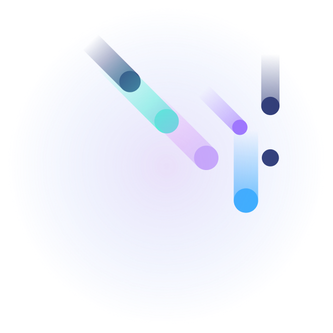

is a managed team of senior bilingual Arabic/English evaluators, built for the exact friction AI startups hit when a data pipeline has to cross a language and a culture at once. No fragmented freelancers, no QA gaps, just one accountable team, one review layer, and one point of contact, across every dialect you ship to.

The problem with scaling dialect: most pipelines are built to catch mistranslation, but few are built to catch the response that's technically correct and still lands wrong ,off register and dialect, missing the cultural beat that a fragmented freelance pool won't reliably catch.